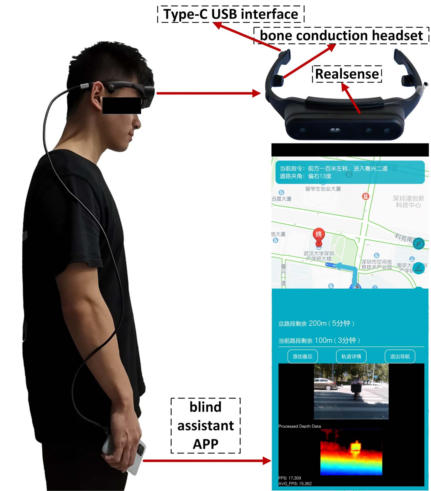
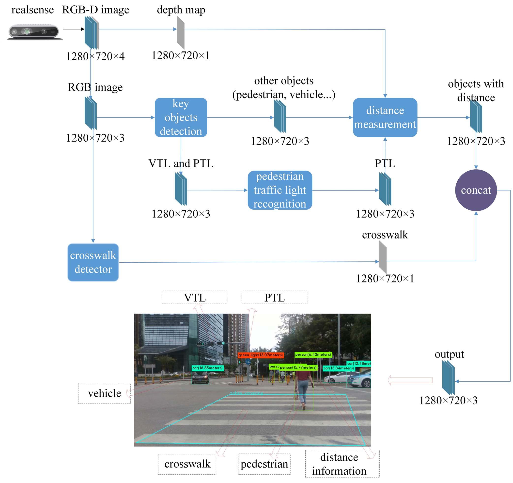
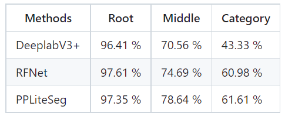
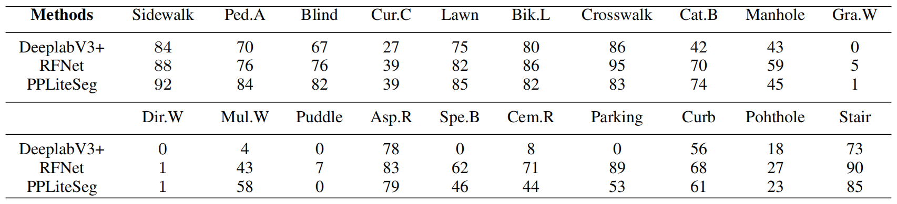
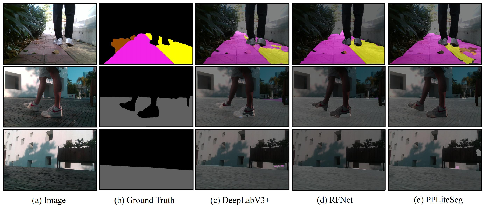

Dynamic Crosswalk Scene Understanding for the Visually Impaired
Shishun Tian, Minghuo Zheng, Wenbin Zou, Xia Li, and Lu Zhang*
1. Shenzhen University; 2. Guangdong KLIIP; 3. Guangdong KLIIP;
[Website] [Paper] [Github]
Overview
Independent mobility poses a great challenge to the visually impaired individuals. This paper proposes a novel system to understand dynamic crosswalk scenes, which detects the key objects, such as crosswalk, vehicle, and pedestrian, and identifies pedestrian traffic light status. The indication of where and when to cross the road is provided to the visually impaired based on the crosswalk scene understanding. Our proposed system is implemented on a head-mounted mobile device (SensingAI G1) equipped with an Intel RealSense camera and a cellphone, and provides surrounding scene information to visually impaired individuals through audio signal. To validate the performance of the proposed system, we propose a crosswalk scene understanding dataset which contains three sub-datasets: a pedestrian traffic light dataset with 7447 images, a dataset of key objects on the crossroad with 1006 images and a crosswalk dataset with 3336 images. Extensive experiments demonstrated that the proposedsystem was robust and outperformed the state-of-the-art approaches. The experiment conducted with the visually impaired subjects shows that the system is practical useful.


Annotated Data:
Category:
With the goal of providing data to enhance unstructure environment navigation, we defined the WVD dataset. WVD contains diverse categories that can easily be spotted from a walk viewpoint, e.g., pedestrian-area and bike-lane. Visually impaired people who are trailed tend to struggle with walking straight, so they tend to touch the Blind to follow over a straightFor mobile robots, the definitions of safe regions are different, e.g., the sidewalk is higher than the bike-lane, and the bike-lane is higher than the road in safety factors. Overall, 20 categories are present in the data.
Images Statics:

Note:
(1) Two inset to better visualize some of categories.
(2) If you can't access the file, please email every author with the title "WVD-SZU Aceess Request...".
Benchmarks
The MIoU Score of Models at Three Levels

Per Categories on The Testing Split


Data Download
Baidu Cloud Disk:
- Link:https://pan.baidu.com/s/1KsVTrJcD4vilYRi7jVo7Xg
- PassWord: akig
Google Cloud Disk:
Citation
@ARTICLE{9481094,
author={Tian, Shishun and Zheng, Minghuo and Zou, Wenbin and Li, Xia and Zhang, Lu},
journal={IEEE Transactions on Neural Systems and Rehabilitation Engineering},
title={Dynamic Crosswalk Scene Understanding for the Visually Impaired},
year={2021},
volume={29},
number={},
pages={1478-1486},
doi={10.1109/TNSRE.2021.3096379}}
Collaborator
License
All datasets and code on this page are copyright by us and published under the Creative Commons Attribution-NonCommercial-ShareAlike 3.0 License.